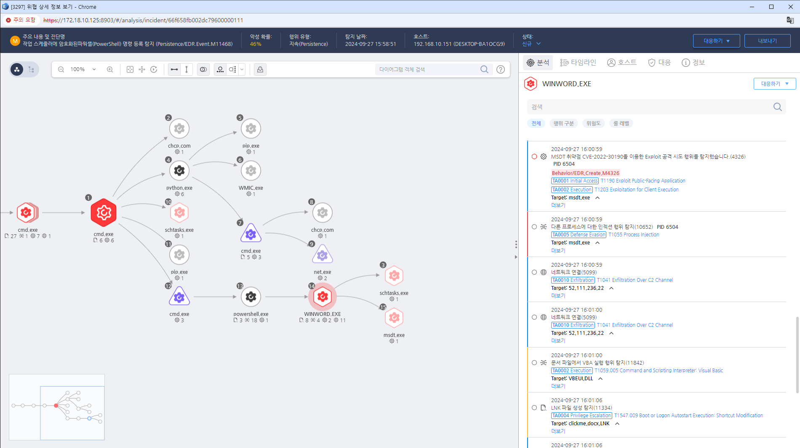

MITRE ATT&CK 액션을 기준으로 대응 방안을 작성
winword.exe로 부터 실행된 msdt.exe가 임의 명령을 실행하는 행위를 탐지
 https://172.18.10.125:8903/#/analysis/incident/66f658fb002dc79600000111
IDS/IPS를 설정하여 비정상적인 다운로드 활동이나 악성 파일 실행 시도를 실시간으로 감지합니다.
시스템 및 네트워크 로그를 정기적으로 검토하여 의심스러운 다운로드 및 실행 패턴을 식별합니다.
악성 소프트웨어가 발견된 경우 즉시 사고 대응 절차를 실행하여 피해를 최소화하고 상황을 관리합니다.
악성 소프트웨어가 실행된 시스템을 즉시 격리하여 네트워크 전파를 방지합니다.
시스템 및 소프트웨어를 정기적으로 점검하여 취약점을 발견하고 패치합니다.
감염된 시스템에서 악성 소프트웨어를 제거하고, 시스템 복구를 수행합니다.
직원들에게 악성 소프트웨어의 위험성과 안전한 다운로드 관행에 대한 교육을 실시하여 인식을 높입니다.
특정 확장자나 파일 유형의 실행을 제한하여 사용자가 의도치 않게 악성 파일을 실행하지 않도록 합니다.
소프트웨어 제한 정책
안티바이러스 및 악성 코드 방지 솔루션
웹 필터링
사용자 교육
정기적인 패치 관리
파일 다운로드 정책
의심스러운 파일 실행 차단
모니터링 및 경고 시스템
Action 실행시 함꼐 영향을 받는 다른 Techniqes
| ATT&CK |
|---|
| T1203.000 |
| D3FEND |
|---|
| D3-SU Software Update |
| D3-SCP System Configuration Permissions |
| D3-PH Platform Hardening |